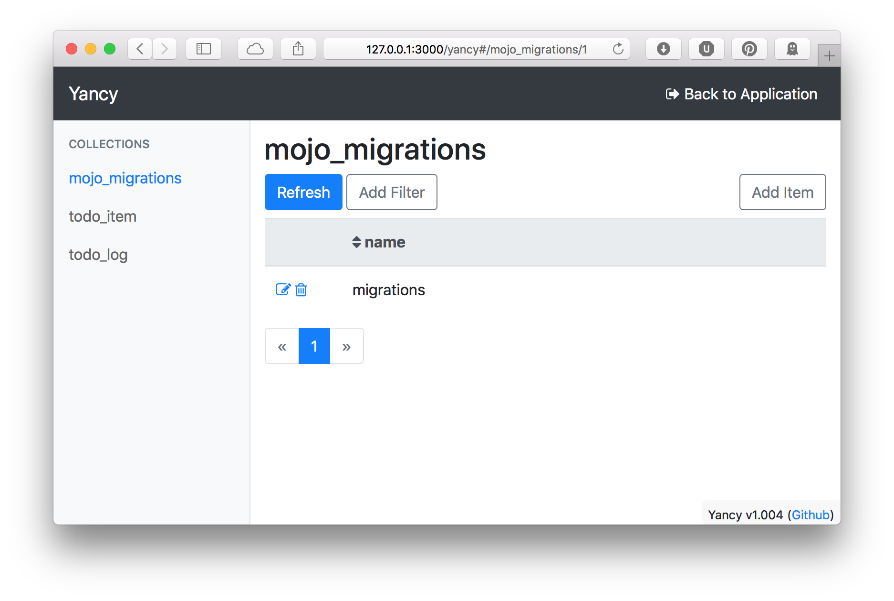
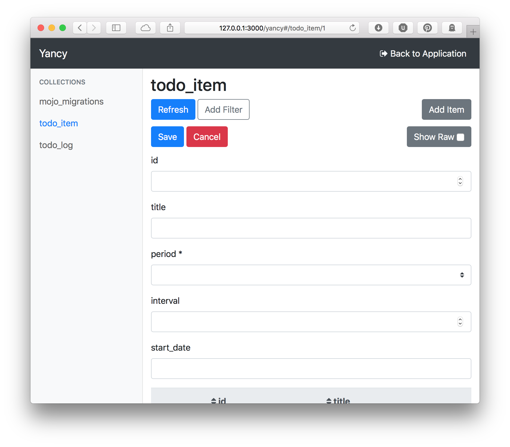
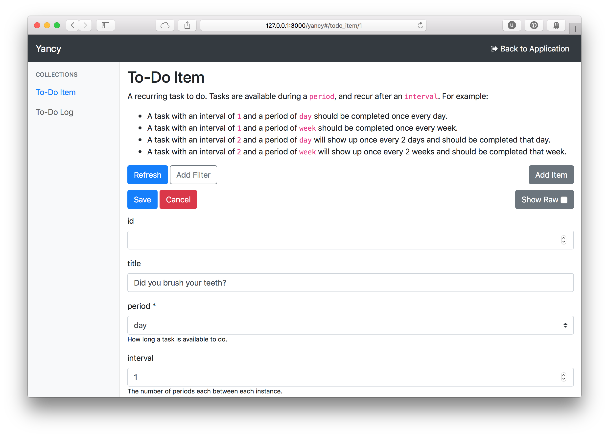

Add Yancy
Yancy helps us manage the content on our site. We can use Yancy to easily add new To-do items to our site.
To add Yancy, we use the Mojolicious::Lite plugin function. For Yancy
to work, we need to configure it with our database and tell it to read
our schema to build its forms. Yancy can generate its configuration from
our database schema and give us a rich form to edit our data.
#!/usr/bin/env perl
use Mojolicious::Lite;
helper pg => sub { state $pg = Mojo::Pg->new( 'postgres:///myapp' ) };
app->pg->auto_migrate(1)->migrations->from_data;
plugin Yancy => {
backend => { Pg => app->pg },
read_schema => 1,
};
Using Yancy
With the Yancy plugin added to our site, we can now manage our data from
our website. Start the app using carton exec ./myapp.pl daemon and
then navigate to http://127.0.0.1:3000/yancy to see the Yancy editor.

The first thing we see is the first table alphabetically,
mojo_migrations. Mojo::Pg uses this to keep track of what database
migrations have been applied. We don't need to use Yancy to manage this,
so we'll go over how to remove this later.
The left-side menu lists all of the tables we have in our database, which Yancy calls "Collections". Click on the "todo_item" collection to see the todo item table, and then click on the "Add Item" button to add new rows.

Yancy has read our database schema and produced a form to edit our todo
items. The period field is a dropdown menu to select one of the three
possible periods, and the interval field is a numeric input.
Configuring Yancy
Right now, Yancy only knows what it read from our database. We can give Yancy more information to make the forms better, adding titles, descriptions, and additional validations.
Yancy configures collections using JSON
schema. Each collection corresponds to
a database table and describes a single row in that table. Additional,
Yancy-specific fields help to control Yancy itself. These custom fields
begin with a x- to prevent overlap with future JSON schema
development.
First, we'll remove the mojo_migrations table. We don't need Yancy to
manage that. For that, we'll use the x-ignore Yancy option to tell
Yancy to ignore the mojo_migrations collection.
plugin Yancy => {
backend => { Pg => app->pg },
read_schema => 1,
collections => {
mojo_migrations => {
'x-ignore' => 1,
},
},
};
Now if we reload the editor, we'll see only the two tables we want:
todo_item and todo_log.
Next, we should add some friendly descriptive text to our tables to make
it easier to edit them. JSON Schema allows use to annotate our
collections with title and description fields. Yancy allows these
fields to have Markdown, so we're using
Mojo::Util's unindent and
trim functions to keep our multi-line descriptions indented.
Not only can we add a title and description to our collections, we can
also add them to each column by declaring the column in the collection's
properties field.
collections => {
mojo_migrations => {
'x-ignore' => 1,
},
todo_item => {
title => 'To-Do Item',
description => unindent( trim q{
A recurring task to do. Tasks are available during a `period`, and
recur after an `interval`. For example:
* A task with an interval of `1` and a period of `day` should be
completed once every day.
* A task with an interval of `1` and a period of `week` should be
completed once every week.
* A task with an interval of `2` and a period of `day` will show up
once every 2 days and should be completed that day.
* A task with an interval of `2` and a period of `week` will show up
once every 2 weeks and should be completed that week.
}),
properties => {
period => {
description => 'How long a task is available to do.',
},
interval => {
description => 'The number of periods each between each instance.',
},
start_date => {
description => 'The date to start using this item. Defaults to today.',
},
},
},
todo_log => {
title => 'To-Do Log',
description => unindent( trim q{
A log of the to-do items that have passed. Items can either be completed
or uncompleted.
} ),
properties => {
complete => {
description => 'The date which this item was completed, if any.',
},
},
},
},
This information now appears in the editor:

After we've added some documentation to our data, we should make the
list view more useful. Yancy tries to guess as to some useful fields for
the list, but it's just a guess. We can display the title, interval,
and period columns for the to-do items by setting 'x-list-columns' =>
[qw( title interval period )].
id,
titletitle,
interval, periodHere's our completely-configured Yancy plugin in our application:
#!/usr/bin/env perl
use Mojolicious::Lite;
use Mojo::Util qw( unindent trim );
use Mojo::Pg;
helper pg => sub { state $pg = Mojo::Pg->new( 'postgres:///myapp' ) };
app->pg->auto_migrate(1)->migrations->from_data;
plugin Yancy => {
backend => { Pg => app->pg },
read_schema => 1,
collections => {
mojo_migrations => {
'x-ignore' => 1,
},
todo_item => {
title => 'To-Do Item',
description => unindent( trim q{
A recurring task to do. Tasks are available during a `period`, and
recur after an `interval`. For example:
* A task with an interval of `1` and a period of `day` should be
completed once every day.
* A task with an interval of `1` and a period of `week` should be
completed once every week.
* A task with an interval of `2` and a period of `day` will show up
once every 2 days and should be completed that day.
* A task with an interval of `2` and a period of `week` will show up
once every 2 weeks and should be completed that week.
}),
example => {
period => "day",
title => "Did you brush your teeth?",
interval => 1,
},
properties => {
period => {
description => 'How long a task is available to do.',
},
interval => {
description => 'The number of periods each between each instance.',
},
start_date => {
description => 'The date to start using this item. Defaults to today.',
},
},
'x-list-columns' => [qw( title interval period )],
},
todo_log => {
title => 'To-Do Log',
description => unindent( trim q{
A log of the to-do items that have passed. Items can either be completed
or uncompleted.
} ),
properties => {
complete => {
description => 'The date which this item was completed, if any.',
},
},
},
},
};
get '/' => 'index';
app->start;
__DATA__
@@ index.html.ep
% layout 'default';
% title 'My Application';
Hello, world!
@@ layouts/default.html.ep
<!DOCTYPE html>
<html>
<head><title><%= title %></title></head>
<body>
%= content
</body>
</html>
@@ migrations
-- 1 up
CREATE TYPE todo_interval AS ENUM ( 'day', 'week', 'month' );
CREATE TABLE todo_item (
id SERIAL PRIMARY KEY,
title TEXT,
period todo_interval NOT NULL,
interval INTEGER DEFAULT 1 CHECK ( interval >= 1 ) NOT NULL,
start_date DATE NOT NULL DEFAULT CURRENT_DATE
);
CREATE TABLE todo_log (
id SERIAL PRIMARY KEY,
todo_item_id INTEGER REFERENCES todo_item ( id ) NOT NULL,
start_date DATE NOT NULL,
end_date DATE NOT NULL,
complete DATE DEFAULT NULL
);
-- 1 down
DROP TABLE todo_log;
DROP TABLE todo_item;
DROP TYPE todo_interval;